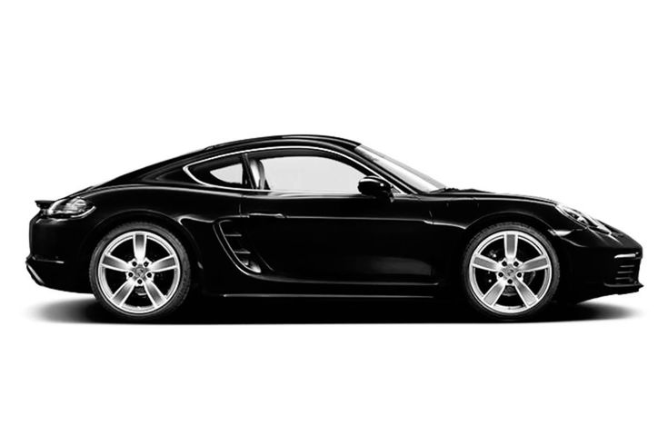
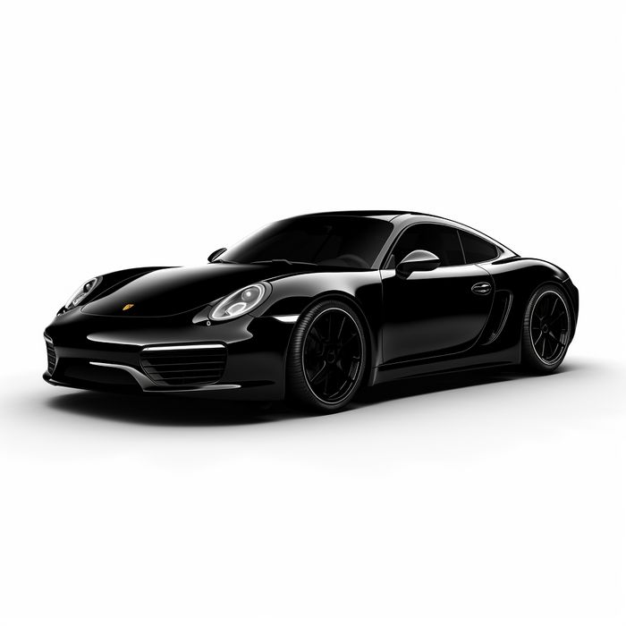
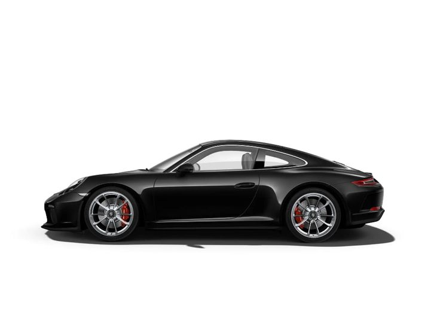
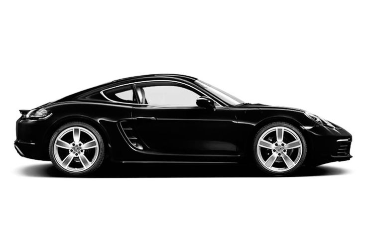
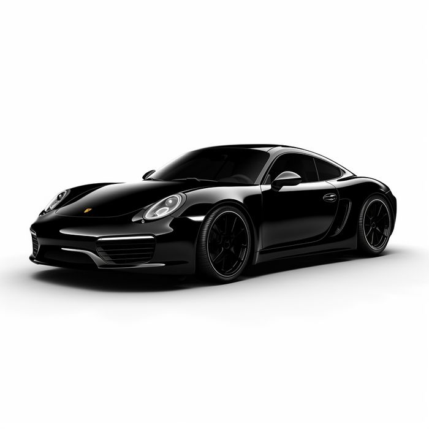
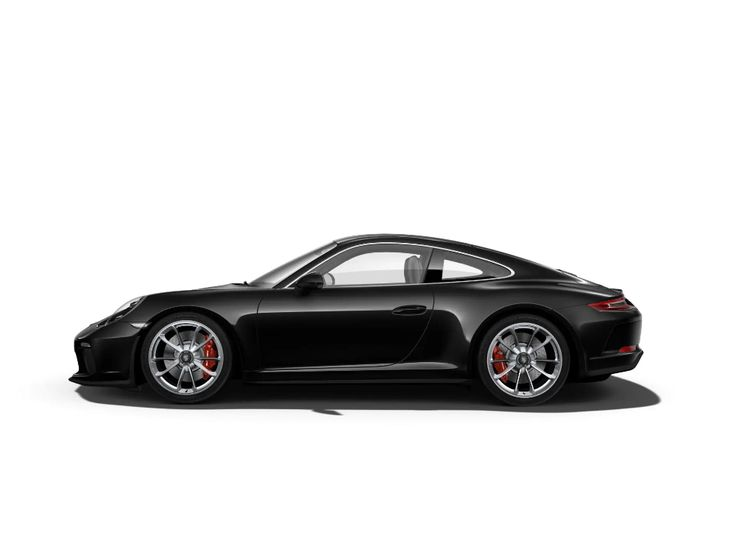

911 CARRERA
 





ABOUT PORSCHE 911 CARRERA
Porsche 911 Carrera: A Timeless Sports Car The Porsche 911 Carrera is an iconic masterpiece in the world of sports cars, renowned for its exceptional blend of performance, design, and driving pleasure. For decades, the 911 has remained a benchmark in automotive engineering, offering a seamless fusion of tradition and innovation. Design The 911 Carrera features a classic silhouette that has evolved gracefully over time, with its signature sloping roofline, wide rear arches, and a pronounced front fascia. Aerodynamic enhancements, including an active rear spoiler, ensure optimal performance and efficiency. Inside, the cabin exudes sophistication, with premium materials, advanced technology, and a driver-focused layout that emphasizes comfort and control.
ABOUT ENGINE PORSCHE 911 CARRERA
Carrera Base: 3.0-liter twin-turbocharged flat-6. Power: 379 hp. Torque: 450 Nm (332 lb-ft).
Carrera S: 3.0-liter twin-turbocharged flat-6. Power: 443 hp. Torque: 530 Nm (391 lb-ft).
Carrera GTS: 3.0-liter twin-turbocharged flat-6. Power: 473 hp. Torque: 570 Nm (420 lb-ft).
PERFORMANCE
0-100 km/h (0-62 mph): 4.2 to 3.3 seconds (depending on trim and drivetrain). Top Speed: Ranges from 293 km/h (182 mph) for the base model to 311 km/h (193 mph) for the GTS.
UNIQUE FITURE
:Rear-engine layout for balanced handling. Advanced aerodynamics with active rear spoilers. Iconic design with modern technology and timeless appeal